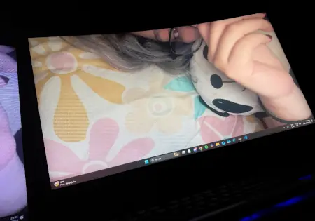
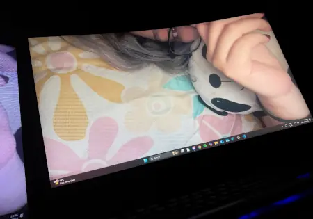
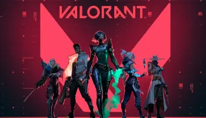
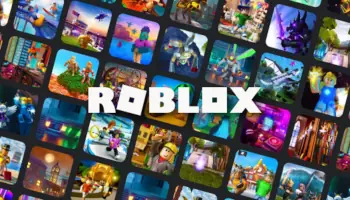
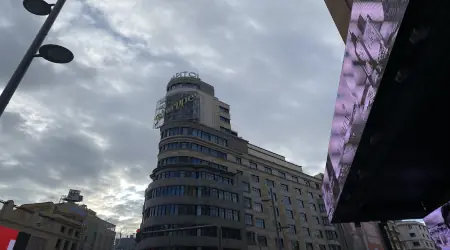
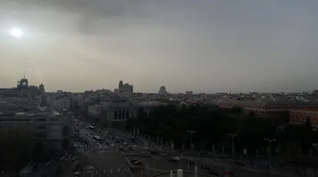
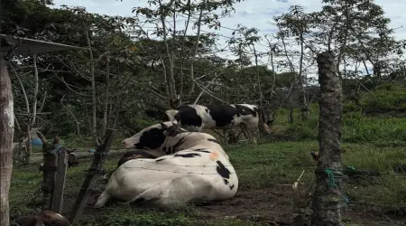

Extrañar a mi ex
A veces me gusta recordar los buenos momentos que pasé con mi ex pareja. Aunque ya no estemos juntos, esos recuerdos siempre tendrán un lugar especial en mi corazón.
A veces me gusta recordar los buenos momentos que pasé con mi ex pareja. Aunque ya no estemos juntos, esos recuerdos siempre tendrán un lugar especial en mi corazón.
En mi tiempo libre disfruto jugar videojuegos, especialmente títulos competitivos y sociales:
Juego shooter táctico donde disfruto de la estrategia y el trabajo en equipo. Es uno de mis juegos favoritos para jugar con amigos.
Plataforma donde exploro diferentes experiencias creadas por la comunidad. Me fascina la creatividad de los desarrolladores.
Battle royale donde disfruto de las partidas rápidas y la constante evolución del juego con nuevas temporadas.

Es mi materia favorita. Disfruto resolver problemas mediante código y crear soluciones innovadoras. Me apasiona aprender nuevos lenguajes y técnicas de desarrollo.
Me fascina cómo la tecnología puede mezclar el mundo real con elementos digitales. He desarrollado varios proyectos interesantes en esta área.
Disfruto crear proyectos innovadores para presentar en ferias universitarias. Es gratificante ver cómo mis ideas cobran vida y reciben feedback positivo.
Fecha: Marzo 2024
Increíble experiencia visitando Madrid, España. Conocí la cultura española, su gastronomía y lugares históricos emblemáticos.
Visité el Museo del Prado, el Parque del Retiro y disfruté de la vida nocturna madrileña.
Fecha: Junio 2025
Recorrer Imbabura fue una experiencia inolvidable. Disfruté de la naturaleza, y tomé muchas fotografías de los paisajes.
